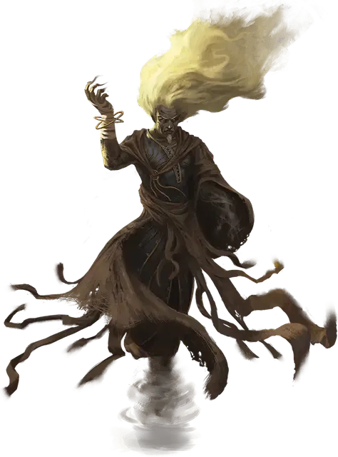

Ян-Си-Бин
Yan-C-Bin
Огромный Элементаль, нейтрально-злой, именной НИП

Класс Доспеха 22 (природный доспех)
Хиты 283 (21к12 + 147)
Скорость 50 футов, летая 150 футов
| мод | спас | ||
|---|---|---|---|
| СИЛ | 18 | +4 | +4 |
| ЛОВ | 24 | +7 | +13 |
| ТЕЛ | 24 | +7 | +7 |
| мод | спас | ||
|---|---|---|---|
| ИНТ | 16 | +3 | +3 |
| МДР | 21 | +5 | +11 |
| ХАР | 23 | +6 | +12 |
Сопротивление урону огонь, холод; дробящий, колющий, рубящий от немагических атак
Иммунитет к урону звук, электричество, яд
Иммунитет к состояниям окаменение, опутанность, отравление, сбивание с ног, паралич, очарование, испуг
Чувства слепое зрение 120 футов, пассивное Восприятие 15
Языки Ауран
Опасность 18 (20000 опыта)
Бонус мастерства +6
Особенности
Воздушное тело. Ян-Си-Бин может входить в пространство враждебных существ и останавливаться там. Он может перемещаться сквозь пространство шириной в 1 дюйм без протискивания, если сквозь такое пространство может пройти воздух.
Усиленные удары. Размашистые удары Ян-Си-Бина считаются магическими при преодолении сопротивления или иммунитета к атакам немагическим оружием.
Врождённое колдовство. Базовой характеристикой Ян-Си-Бина является Харизма (Сл спасброска от заклинаний 20, +12 к попаданию заклинаниями). Он врождённо может накладывать следующие заклинания, не нуждаясь в материальных компонентах:
Неограниченно:. порыв ветра [gust of wind], невидимость [invisibility], молния [lightning bolt]
2/день каждое. : пляшущая молния [chain lightning], облако смерти [cloudkill], ускорение [haste]
Легендарное сопротивление (3/день). Если Ян-Си-Бин проваливает спасбросок, он может вместо этого может сделать спасбросок успешным.
Сопротивление магии. Ян-Си-Бин совершает с преимуществом спасброски от заклинаний и прочих магических эффектов.
Действия
Мультиатака. Ян-Си-Бин совершает две атаки размашистыми ударами.
Размашистый удар. Рукопашная атака оружием: +14 к попаданию, досягаемость 10 фт, одна цель. Попадание: урон силовым полем 20 (3к8 + 7) плюс урон электричеством 10 (3к6).
Удар грома (перезаряжается после короткого или длительного отдыха). Ян-Си-Бин создает ужасный удар грома в сфере радиусом 100 футов с центром на себе. Все остальные существа должны совершить спасбросок Телосложения Сл 24. При провале существо получает урон звуком 31 (9к6) и становится оглохшим на 1 минуту. При успехе существо получает половину урона и становится оглохшим до начала следующего хода Ян-Си-Бина.
Смена формы. Ян-Си-Бин превращается в гуманоида Среднего размера. Пока он находится в изменённой форме, его фигуру окружает небольшой вихрь, его глаза становятся белыми и затуманенными, и он теряет черту «воздушное тело». Он может оставаться в изменённой форме на протяжении 1 часа и может действием вернуться в свою истинную форму.
Призыв элементалей (1/день). Ян-Си-Бин призывает до трёх воздушных элементалей, теряя по 30 хитов за каждого элементаля, вызванного таким образом. Призванные элементали имеют максимальное количество хитов и появляются в пределах 100 футов от Ян-Си-Бина. Они исчезают, если хиты Ян-Си-Бина упадут до 0.
Легендарные действия
Ян-Си-Бин может совершить 3 легендарных действия, выбирая их из представленных ниже вариантов. За один раз можно использовать только одно легендарное действие, и только в конце хода другого существа. Ян-Си-Бин восстанавливает использованные легендарные действия в начале своего хода.
Громовой раскат. Ян-Си-Бин создает раскат грома, который слышен на расстоянии 300 футов. Все существа, расположенные в пределах 30 футов от Ян-Си-Бина, получают урон звуком 5 (1к10).
Телепортация (стоит 2 действия). Ян-Си-Бин магическим образом телепортируется на расстояние до 120 футов в свободное пространство, которое он видит. Всё несомое или носимое Ян-Си-Бином снаряжение пере-носится вместе с ним.
Удушение (стоит 3 действия). Ян-Си-Бин забирает весь воздух из лёгких одного способного дышать существа, которое он может видеть и которое расположено в пределах 60 футов от него. Цель должна совершить спасбросок Телосложения Сл 21. При провале хиты цели опускаются до 0, и она начинает умирать. При успехе цель не может дышать и говорить до начала своего следующего хода.
Логово
Ян-Си-Бин живёт на Стихийном Плане Воздуха во дворце, сотканном из воздушных потоков. Там, и в элементальных узлах воздуха на Материальном Плане, власть Ян-Си-Бина неоспорима. В своём логове он может использовать действия, описанные ниже.
Действия логова
При значении инициативы «20» (в случае ничьей проигрывает всем конкурентам) Ян-Си-Бин использует действие логова, чтобы вызвать один из следующих эффектов (он не может создать один и тот же эффект более одного раза подряд):
• Ян-Си-Бин остужает воздух в логове, и все поверхности покрываются льдом. Эффект аналогичен заклинанию метель [sleet storm].
• Ян-Си-Бин управляет окружающим его воздухом как продолжением себя. Все выбранные Ян-Си-Бином существа должны совершить спасбросок Телосложения Сл 24. При провале существо отбрасывается на дистанцию 3к6 × 10 футов или поднимается в воздух на ту же высоту. Существо, столкнувшееся с твёрдой поверхностью при броске или упавшее с высоты, получает 1к6 дробящего урона за каждые 10 футов броска или падением.
• Ян-Си-Бин создаёт пылевой вихрь в пределах 120 футов от себя, который рассеивается в следующем раунде при значении инициативы «20». Пока вихрь не исчезнет, все существа и объекты в его области считаются слабо заслонёнными. Все существа, расположенные в области вихря, должны преуспеть в спасброске Мудрости Сл 24, иначе станут ослеплёнными. Слепота исчезает в следующем раунде при значении инициативы «20».
Местные эффекты
Воздушные массы в окрестностях элементального узла подчиняются Ян-Си-Бину, покуда Принц Злого Воздуха остаётся внутри него. Из-за этого в воздухе висит то обжигающая жара, то лютый мороз; повсюду гремит гром, а небо прорезают разряды молний; ураганные ветра подхватывают с земли тяжести, швыряя их назад с невероятной силой; а воронки смерчей повсеместно уничтожают всё, чего коснутся.
• В радиусе 5 миль округу терзают ураганные ветра, которые поднимают в воздух мелкие или лёгкие предметы, срывают заборы и крыши с домов, обламывают сучья с деревьев и делают невозможными полёты в своей области. Существа Маленького и Среднего размера движутся сквозь такой ветер с половиной скорости; существа Крошечного размера, не защищённые от воздействия ветра, должны совершить проверку Силы (Атлетика) Сл 15. При провале их подхватывает ветер, и они уносятся в его направлении со скоростью 40 футов в раунд.
• В пределах 5 миль от логова Ян-Си-Бина разражаются грозы, сопровождаемые оглушительными раскатами грома и постоянными вспышками молний. Каждые десять минут, что бушует гроза, в находящихся под открытым небом существ может ударить молния с шансом в 5%. Поражённое молнией существо должно совершить спасбросок Телосложения Сл 21. При провале оно получает урон электричеством 21 (6к6), а при успехе — половину урона.
• В пределах 5 миль от логова Ян-Си-Бина появляются смерчи. Каждый час, пока персонажи находятся в этой области, существует шанс в 5%, что они окажутся на пути смерча, движущегося со скоростью 250 футов в раунд. Каждый персонаж должен совершить спасбросок Телосложения Сл 21, получая при провале дробящий урон 33 (6к10). Смерч уничтожает все деревянные и ветхие строения на своём пути.
• В пределах 1 мили от логова природные пещеры и продуваемые ветром каньоны создают временные порталы на Стихийный План Воздуха, пропуская в мир смертных элементальных существ, которые будут обитать неподалёку от таких мест.
Если Ян-Си-Бин уничтожен или изгнан на свой родной план, местные эффекты рассеиваются в течение следующих 1к10 дней.
Описание
Ян-Си-Бин — Принц Злого Воздуха — настолько же мудр, насколько злобен, а его замыслы начали претворяться в жизнь ещё при сотворении мира. Более утончённый и коварный, чем другие элементальные принцы, Ян-Си-Бин действует незримо: он изучает своих противников с безопасного расстояния, молниеносно наносит удар и исчезает прежде, чем его враги смогут ответить.
Его истинная форма представляет собой невидимый вихрь воющего воздуха, высотой 30 и шириной 15 футов. Однако Ян-Си-Бин иногда принимает форму сухопарого почтенного человека с тонкими белыми волосами и сияющими белыми глазами. Если же Ян-Си-Бин хочет остаться незамеченным, то он проявляется только как лёгкое дуновение холодного ветра.
Из своего дворца, парящего в бесконечных затянутых облаками небесах Плана Воздуха, Ян-Си-Бин на протяжении тысячелетий наблюдает за тем, как меняются миры. Злые воздушные существа почитают элементального принца как бога и верят, что Ян-Си-Бин смотрит на них через вихри и ураганы. Но Принцу Злого Воздуха не нужны ни их молитвы, ни дары, ни жертвоприношения. Всё, чего он хочет, — уничтожить материальные миры, разорвать их на части неодолимой силой стихии ветра и воздуха